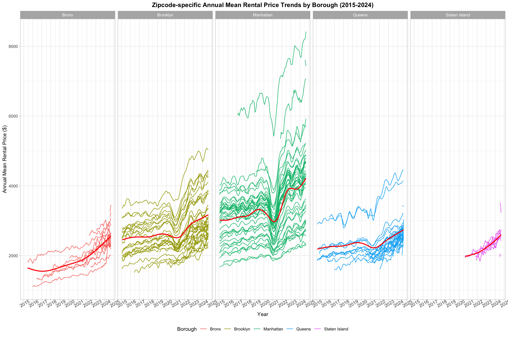
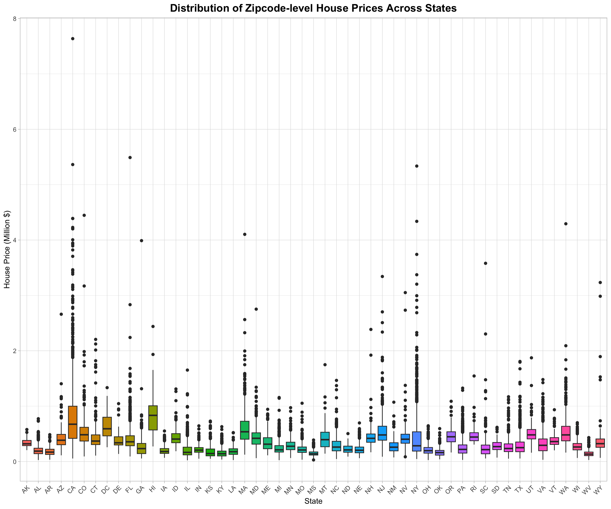
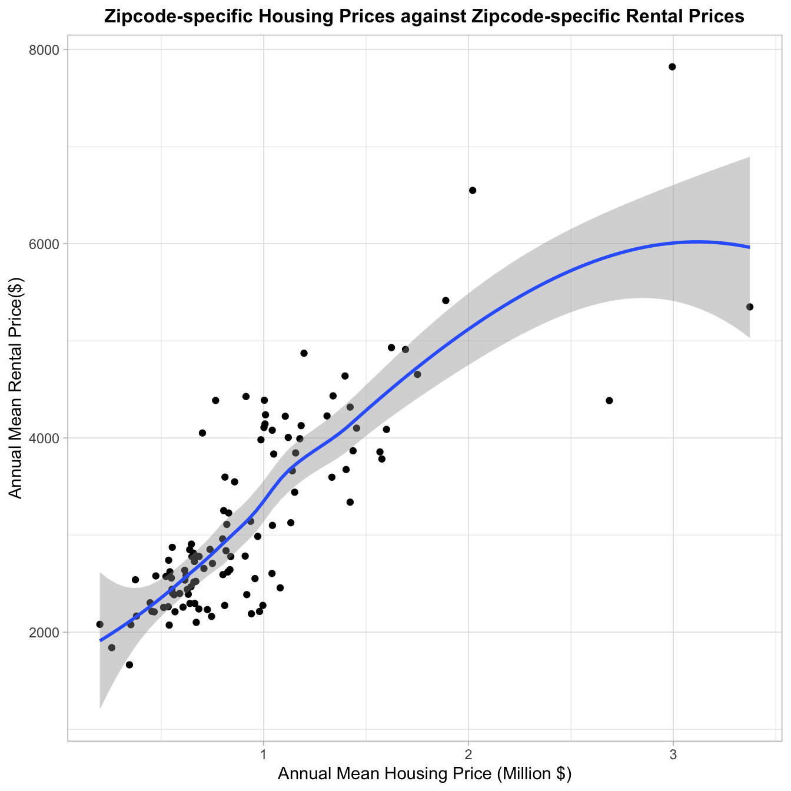

# Load Necessary Packages
library(ggplot2)
library(tidyverse)
library(dplyr)
library(tidyr)
library(rvest)
# Preliminary Loading of All Datasets
NYC_Rental_Price = read.csv("./datasets/NYC Rental.csv")
US_Housing_Price = read.csv("./datasets/US Housing 2023.csv")
NYC_Zipcode = rvest::read_html("https://p8105.com/data/zip_codes.html") %>% html_table(fill = TRUE) %>% mutate(.=.[[1]])NYC_Zipcode
NYC_Zipcode Dataset contains data of
Zipcode-Location associations within entire NYC.NYC_Rental_Price
NYC_Rental_Price Dataset contains
rental price data within NYC from year 2015 to 2018.US_Housing_Price
US_Housing_Price Dataset contains
housing price data within entire U.S. in year 2023.# Raw-Data -> Pivot Longer -> Filter out Redundant Columns
NYC_Rental_Price = NYC_Rental_Price %>%
select(RegionName, CountyName, starts_with("X")) %>%
janitor::clean_names() %>%
rename("zipcode"="region_name", "county"="county_name") %>%
mutate(county=gsub(" County","",county)) %>%
mutate(across(where(is.numeric), round, 2)) %>%
pivot_longer(cols=starts_with("x"), names_to="date", values_to="rental_price") %>%
mutate(date=gsub("x","",date)) %>%
mutate(date=gsub("_","/",date))
NYC_Zipcode = NYC_Zipcode %>%
janitor::clean_names() %>%
select(county, zip_code, neighborhood) %>%
rename("zipcode"="zip_code") %>%
mutate(borough=recode(county, "Kings"="Brooklyn", "New York"="Manhattan", "Richmond"="Staten Island")) %>%
relocate(zipcode, county, borough)
US_Housing_Price = US_Housing_Price %>%
janitor::clean_names() %>%
select(city, region_name, state, starts_with("x")) %>%
rename("zipcode"="region_name") %>%
arrange(zipcode) %>%
pivot_longer(cols=starts_with("x"), names_to="date", values_to="housing_price") %>%
mutate(date=gsub("x","",date)) %>%
mutate(date=gsub("_","/",date)) %>%
relocate(zipcode)
# Rectify incorrect zipcodes
NYC_Zipcode %>% filter(zipcode==11201 | zipcode==10463) %>% select(zipcode, county, borough) # correct data should be: 11201--Kings--Brooklyn & 10463--Bronx--Bronx## # A tibble: 4 × 3
## zipcode county borough
## <int> <chr> <chr>
## 1 10463 Bronx Bronx
## 2 11201 Kings Brooklyn
## 3 10463 New York Manhattan
## 4 11201 New York Manhattan NYC_Zipcode = NYC_Zipcode %>% filter(!(zipcode==11201 & county=="New York")) %>% filter(!(zipcode==10463 & county=="New York")) # select all correct zipcodes
# Create Merged Dataset
Merged = left_join(x=NYC_Zipcode, y=NYC_Rental_Price, by="zipcode") %>%
rename("county"="county.x") %>%
relocate(zipcode, county, borough, neighborhood) %>%
select(-county.y)NYC_Rental_Price
and NYC_Housing Price, but contain duplicate values 10463
and 11201 in NYC_Zipcode. Remove incorrect records.Merged dataset.Merged dataset:
NYC_Rental_Price and
US_Housing_Price datasets, changed RegionName
to zipcode.NYC_Rental_Price and
NYC_Rental_Price to a longer format with all date variables
listed under column date and values listed under column
rental_price and housing_price,
respectively.NYC_Zipcode dataset, I kept only the
zipcode, county, borough,
neighborhood columns.NYC_Rental_Price dataset, I kept only the
zipcode, county, date,
rental_price columns.US_Housing_Price dataset, I kept only the
zipcode, city, state,
housing_price columns.# Table 1 --- average rental price in each borough and year
Table1 = Merged %>%
separate(date, into=c("year","month","day"), sep="/") %>%
group_by(borough, year) %>%
summarise(mean_rental_price=mean(rental_price, na.rm=TRUE)) %>%
pivot_wider(names_from=borough, values_from=mean_rental_price) %>%
filter(!is.na(year))
# Table 2 --- comparing average rental prices from 2020 to 2021
Table2 = Merged %>%
separate(date, into=c("year","month","day"), sep="/") %>%
filter( (year=="2020"|year=="2021") & month==c("1") ) %>%
group_by(year) %>%
select(zipcode, year, rental_price) %>%
rename("January_of_Year"="year") %>%
pivot_wider(names_from=January_of_Year, values_from=rental_price) %>%
rename("Jan.2020"="2020", "Jan.2021"="2021") %>%
arrange(zipcode) %>%
mutate(absolute_change = Jan.2021-Jan.2020, relative_percentage_change = (Jan.2021 - Jan.2020) / Jan.2020 * 100) %>%
mutate(across(where(is.numeric),round, 2))
# Table 3 --- for each borough, select neighborhood with largest drop in rental price from Jan.2020 to Jan.2021
Table3 = Merged %>%
separate(date, into=c("year","month","day"), sep="/") %>%
filter((year %in% c("2020", "2021")) & (month=="1")) %>%
pivot_wider(names_from = year, values_from = rental_price, names_prefix = "Jan.") %>%
mutate(drop = Jan.2020 - Jan.2021) %>%
filter(!is.na(drop)) %>%
group_by(borough) %>%
arrange(borough, desc(drop)) %>%
slice(1) %>%
select(-zipcode, -month, -day, -county)
# Table 4 --- average house price within each ZIP code over 2023
Table4 = US_Housing_Price %>%
separate(date, into=c("year","month","day"), sep="/") %>%
group_by(zipcode, year) %>%
summarise(mean_housing_price=mean(housing_price)) %>%
mutate(year=as.numeric(year), mean_housing_price=round(mean_housing_price,digits=0)) %>%
select(-year)NYC_Rental_Price dataset has 149 but
NYC_Zipcode dataset has 320 zipcodes is because it is not
necessary to include rental price data for every single zipcode within
NYC.| year | Bronx | Brooklyn | Manhattan | Queens | Staten Island |
|---|---|---|---|---|---|
| 2015 | 1759.596 | 2492.928 | 3022.042 | 2214.707 | NaN |
| 2016 | 1520.195 | 2520.357 | 3038.818 | 2271.955 | NaN |
| 2017 | 1543.599 | 2545.828 | 3133.848 | 2263.303 | NaN |
| 2018 | 1639.429 | 2547.291 | 3183.703 | 2291.918 | NaN |
| 2019 | 1705.589 | 2630.503 | 3310.409 | 2387.816 | NaN |
| 2020 | 1811.443 | 2555.051 | 3106.518 | 2315.632 | 1977.608 |
| 2021 | 1857.776 | 2549.890 | 3136.632 | 2210.787 | 2045.430 |
| 2022 | 2054.267 | 2868.199 | 3778.375 | 2406.038 | 2147.436 |
| 2023 | 2285.459 | 3015.183 | 3932.610 | 2561.615 | 2332.934 |
| 2024 | 2496.896 | 3125.657 | 4078.440 | 2693.584 | 2536.443 |
| zipcode | Jan.2020 | Jan.2021 | absolute_change | relative_percentage_change |
|---|---|---|---|---|
| 10001 | 4108.10 | 3397.65 | -710.45 | -17.29 |
| 10002 | 3645.42 | 2935.11 | -710.31 | -19.48 |
| 10003 | 3569.78 | 2897.24 | -672.54 | -18.84 |
| 10004 | 3149.66 | 2443.70 | -705.96 | -22.41 |
| 10005 | 3407.59 | 2917.90 | -489.69 | -14.37 |
| 10006 | NA | 2956.05 | NA | NA |
| 10007 | 6334.21 | 5421.61 | -912.60 | -14.41 |
| 10009 | 3406.44 | 2692.19 | -714.25 | -20.97 |
| 10010 | 3697.28 | 3012.35 | -684.93 | -18.53 |
| 10011 | 4104.07 | 3441.91 | -662.16 | -16.13 |
| 10012 | 3628.57 | 2942.34 | -686.23 | -18.91 |
| 10013 | 4431.87 | 3797.82 | -634.05 | -14.31 |
| 10014 | 3768.25 | 3188.49 | -579.76 | -15.39 |
| 10016 | 3731.14 | 3019.43 | -711.71 | -19.07 |
| 10017 | 3314.83 | 2793.41 | -521.42 | -15.73 |
| 10018 | 3893.49 | 3314.23 | -579.26 | -14.88 |
| 10019 | 3505.28 | 2970.02 | -535.26 | -15.27 |
| 10021 | 3048.37 | 2564.91 | -483.46 | -15.86 |
| 10022 | 3471.45 | 2852.83 | -618.62 | -17.82 |
| 10023 | 3438.90 | 2895.11 | -543.79 | -15.81 |
| borough | neighborhood | Jan.2020 | Jan.2021 | drop |
|---|---|---|---|---|
| Bronx | Southeast Bronx | 1922.05 | 1905.59 | 16.46 |
| Brooklyn | Greenpoint | 3425.76 | 2987.82 | 437.94 |
| Manhattan | Lower Manhattan | 6334.21 | 5421.61 | 912.60 |
| Queens | West Central Queens | 2509.86 | 2292.88 | 216.98 |
Lower Manhattan has the largest price decrease of
$912.60 and Southeast Bronx has the least
price decrease of $16.46. Plot1
Plot2
Plot3
General positive correlation.
Limitations: